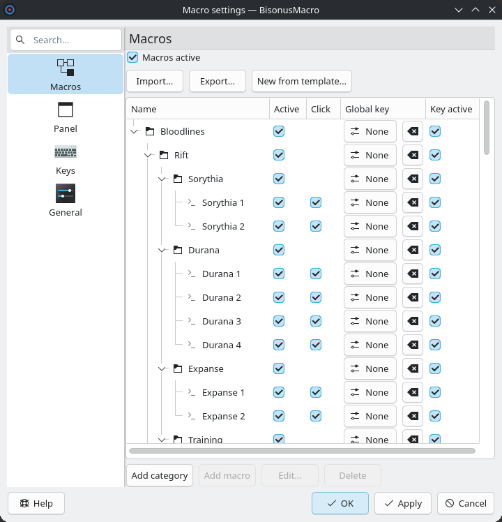
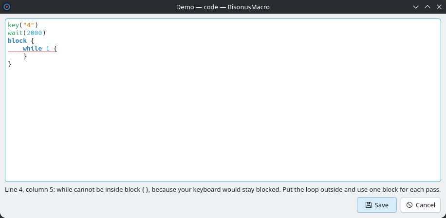

You edit the macros in the main window. Click the gear button (⚙) in the toolbar of the panel to open it. Four buttons under the tree change the tree.

The list on the left has four pages. Click a name to open its page. Drag the bar between the list and the page to change the width of the list. The program remembers the width.
Press Ctrl+F in the main window. The focus goes to the search field above the list of pages. The search works on every page:
Capital letters do not matter. Clear the field to see all the macros again.
You can set the key of a macro in the tree, in the column "Global key", or in the window of the node. You can also set it in the panel: click the key button of the macro. The page "The panel" shows how.
The program holds a global key only while it is useful. With "Macros active" off, the program holds no key of a macro or of a category. The key goes to the other programs, and the program keeps it in the settings. The same is true for the keys of the nodes under an inactive category. An inactive category keeps its key while "Macros active" is on and the categories above it are active: the key turns the category on again. An inactive macro holds no key. The keys come back when you turn the switch or the category on again.
The program waits 30 ms after each key and after each letter of a text. This pause never changes. You do not set it in the settings. "Start pause" is the wait before the first key. It stays on the page "Keys".
An export file or a settings file from an older version can have a value for the pause between keys. The program ignores this value.
The window has these fields:
The page "Scripting language" has the full language of the scripts.
The id of a new node comes from the id of the parent and the name of the node. A new node gets a different id when the id is in use. A change of the name does not change the id, so the keys and the switches stay linked.
The code button on a row of the panel opens the code window of that macro. You do not need the main window for this.

The status line under the editor shows "No errors" or the first error. It gives the line, the column and the reason. A red wavy line marks the error in the text. In this picture, while is not allowed inside a block.
"Save" writes macros.json, and the program reads it again. "Cancel" drops the changes. A macro with an error does not run. Its row is gray until you correct the script.
The page "Keys" has "Key that stops the running macro". Default: Pause. The key stops the macro that runs. It does not work inside a block, where the keyboard is blocked. The item "Stop macro" in the menu of the tray stops a macro at any time.
The button is on the page "General". It deletes the KWin rules, the KWin scripts and the global keys of the program. Then the program quits. After this, uninstall the package. The box "Also delete my macros" deletes macros.json too. The program keeps a backup.
The key of the jutsu is a step of the template. For another key, write a new template in macros.json.
"teleport-7": [ { "tasta": "7" }, { "pauza": 2000 }, { "tasta": "/" }, { "text": "$nume" }, { "tasta": "Return" } ]
The code button of the macro now shows the key 7 in the first step.
The changes of the editor stay in the window until you click "Apply" or "OK". Then the program writes macros.json and after it the settings. "Cancel" drops the changes.
Each row has five columns: name, active, click, global key and key active. A category has a global key and a key active, but no click. An inactive node is gray, with the reason.